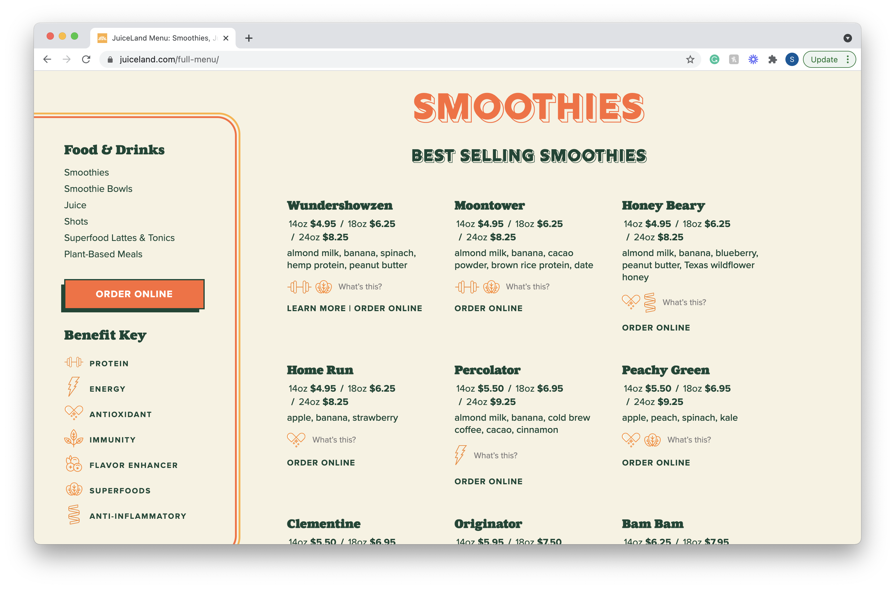
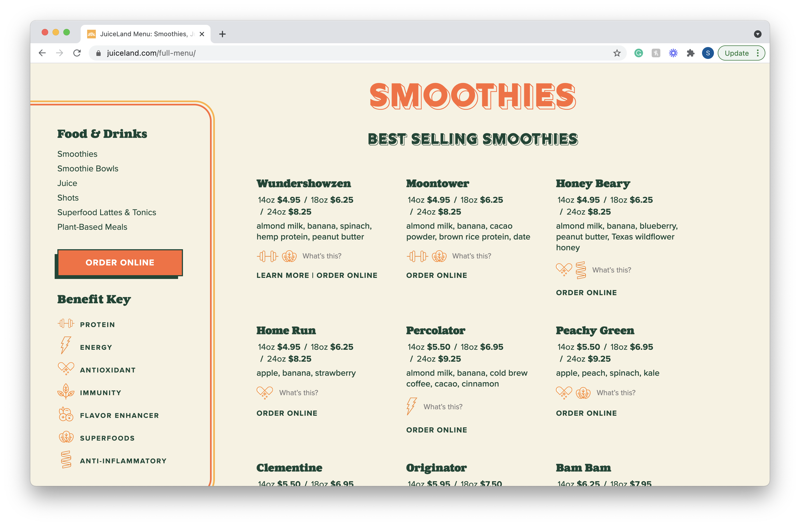

Final project proposal
Introduction
Banana Babe Smoothies.
Banana Babe smoothies provide organic smoothies and bowls with all fresh, organic, and vegan ingredients. We source our fruit from local farms to provide the freshest and most environmentally conscious ingredients we can. Sourcing ingredients from local farmers provide a shorter farm-to-table journey. Environmentalism is our number one priority at Banana Babe and that is why all the smoothies we sell 10% of the profits go towards the Amazon Rain Forest helping with deforestation.
Target audience
The people who use this website are customers of Banana babe and future customers of the shop. Environmentally conscious people are also the target audience because it is a sustainable and charitable store.
The primary tasks and goals of visiting this website are to be further informed about the menu of Banana Babe. It also provides resources and information about sustainability to help people learn more about food sourcing and the Amazon Rain Forest and what they can do to protect it.
Comparative analysis
Earthbar
Juiceland
 
